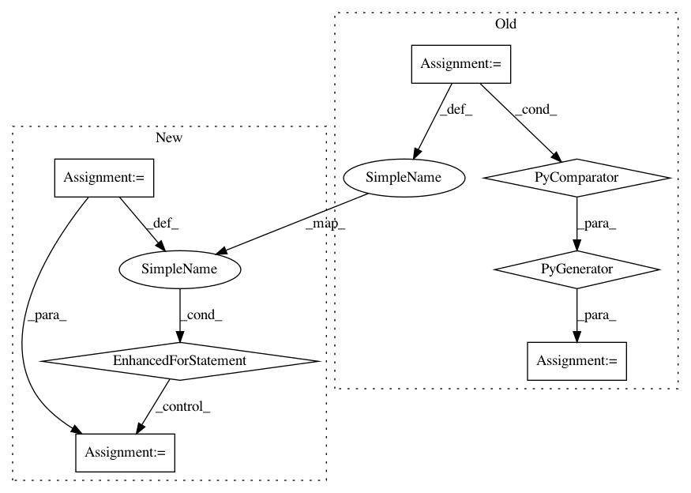

021b07ba9751b9eb817e6b9e203612abf5a9ce18,catalyst/dl/experiment/config.py,ConfigExperiment,get_callbacks,#ConfigExperiment#Any#,389
Before Change
default_callbacks.append(("exception", RaiseExceptionCallback))
for callback_name, callback_fn in default_callbacks:
is_already_present = any(
isinstance(x, callback_fn) for x in callbacks.values()
)
if not is_already_present:
callbacks[callback_name] = callback_fn()
return callbacks
After Change
for callback_name, callback_fn in default_callbacks:
is_already_present = False
for x in callbacks.values():
if isinstance(x, PhaseWrapperCallback):
x = x.callback
if isinstance(x, callback_fn):
is_already_present = True
break
if not is_already_present:
callbacks[callback_name] = callback_fn()
return callbacks
In pattern: SUPERPATTERN
Frequency: 4
Non-data size: 7
Instances
Project Name: catalyst-team/catalyst
Commit Name: 021b07ba9751b9eb817e6b9e203612abf5a9ce18
Time: 2019-11-10
Author: alex.gaziev@gmail.com
File Name: catalyst/dl/experiment/config.py
Class Name: ConfigExperiment
Method Name: get_callbacks
Project Name: catalyst-team/catalyst
Commit Name: f4beaac559e00a3676d942dc7e8fea69efc01cfe
Time: 2020-11-30
Author: raveforlive@gmail.com
File Name: catalyst/metrics/avg_precision.py
Class Name:
Method Name: mean_avg_precision
Project Name: keras-team/keras
Commit Name: bf464d7ed9283988fea1f548a11a0171fd2ff364
Time: 2021-01-06
Author: gardener@tensorflow.org
File Name: keras/utils/version_utils.py
Class Name:
Method Name: swap_class
Project Name: OpenNMT/OpenNMT-py
Commit Name: 68fbfd1876c367323acf830736bae1af499cc0fe
Time: 2018-03-07
Author: dengyuntian@gmail.com
File Name: onmt/io/TextDataset.py
Class Name: TextDataset
Method Name: __init__